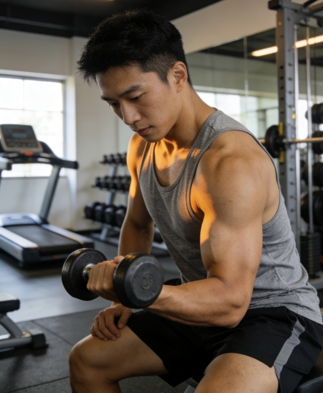
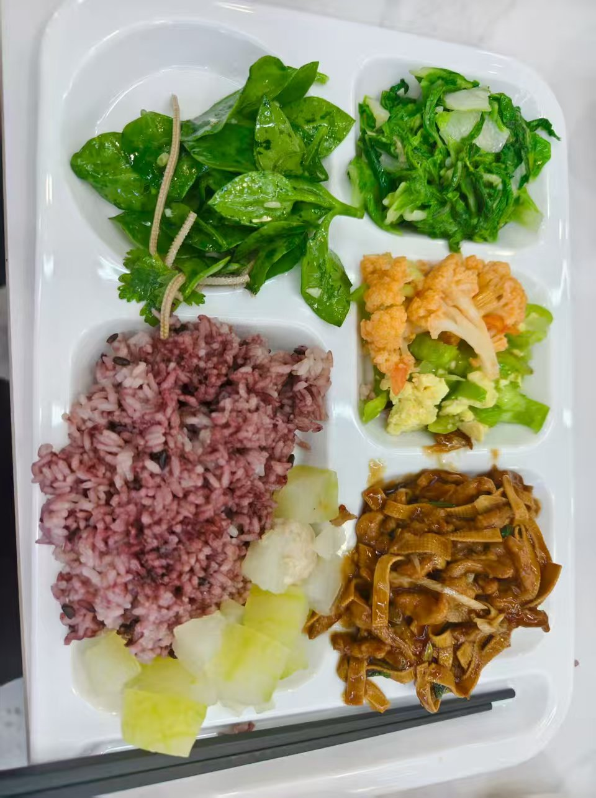
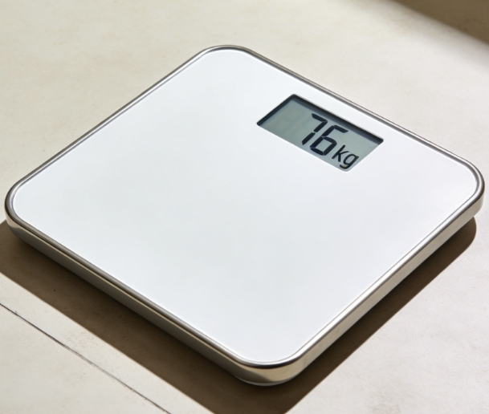

让每一位教练都能高效管理百名学员
基于 OpenClaw 构建的智能健身管理系统，以飞书为载体，
通过 AI 驱动的学员建档、个性化训练计划、多模态打卡与饮食分析，
实现教练端 + 学员端的全链路数字化管理。
学员数据散落在 Excel、微信、纸质笔记中，查找耗时
✅ 一个对话窗口，所有数据结构化存储，秒级检索
靠记忆追踪打卡，学员流失了才发现
✅ 自动打卡检查，连续缺勤≥3天立即预警
通用训练模板，无法考虑每个人的伤病和条件
✅ AI 根据个人档案生成专属计划，动态调整
完全依赖学员自觉，无法量化营养摄入
✅ 拍照即分析，AI 实时估算热量和三大营养素
全面管理，数据驱动运营
对话式 / 模板导入 / 批量导入 三种方式灵活建档，3 分钟完成一位学员
根据学员目标、伤病、设备条件生成周训练计划，包含热身、主训和拉伸
自动生成周报，打卡率趋势、流失预警、续费提醒一目了然
飞书多维表格驱动，学员分布、打卡热力图、排行榜实时可视化
零门槛打卡，即时AI反馈
文字描述 / 训练照片 / 语音消息，怎么方便怎么来，AI 全能理解
发送训练照片，AI 自动识别动作、评估姿势标准度、给出改进建议
拍一张餐食照片 → 菜品识别 → 热量估算 → 三大营养素拆解 → 个性化建议
拍摄体重秤照片，AI 自动识别数值、对比历史、显示趋势变化
以下为 ClawFit 系统实际运行中的教练-学员交互记录，点击切换查看不同场景
教练发送"新学员"，ClawFit 逐步引导收集完整信息，3 分钟自动生成结构化档案
学员发送打卡内容，ClawFit 即时分析训练质量并给出专业反馈和下次建议
学员发送训练照片，AI 自动识别动作类型、评估姿势标准度、给出改进建议

🏋️学员拍一张餐食照片，AI 自动识别菜品、估算热量、拆解三大营养素

🍜学员拍体重秤照片，AI 自动提取数值、对比历史记录、显示变化趋势

⚖️学员反馈身体不适，系统自动标记伤病风险并建议调整训练计划
每周日 20:03 自动生成，教练无需手动汇总，一目了然掌握全局运营状态
| 学员 | 打卡率 | 本周亮点 |
|---|---|---|
| 陈强 | 90% | 卧推60kg表现出色，训练结构合理，首周即高度自律 |
| 张三 | 80% | 卧推渐进到62.5kg，主动加背部训练，膝盖恢复良好 |
| 学员 | 打卡率 | 具体情况 |
|---|---|---|
| 李四 | 50% | 首次打卡表现出色（卧推60kg），但后续打卡频率偏低 |
| 学员 | 本周变化 | 总变化 | 距目标 |
|---|---|---|---|
| 张三 | -9.0kg | 85→76kg | 仅差 1kg 🎉 |
| 陈强 | — | 85kg（基准） | 目标 75kg |
| 李四 | — | 70kg（基准） | 目标 65kg |